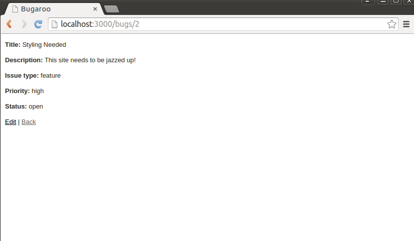
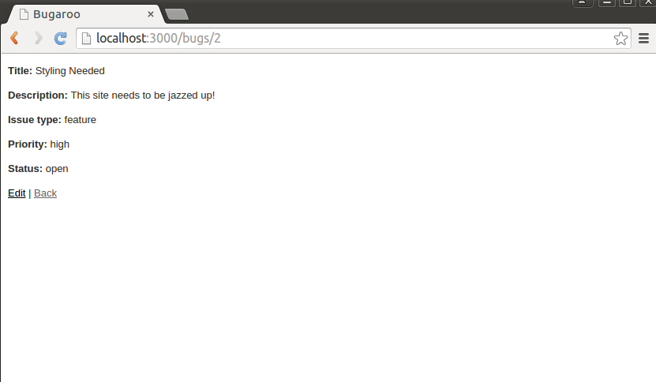

CIS 371 |
Server Side |
Winter 2025 |
Based on an assignment originally originally designed by Prof. Engelsma
For this sequence of assignments, you will build a simple web application using a server-side framework of your choice (Express, Rails, Flask, .etc) The framework must be server-side. You may not use client-side systems such as React, Angular, Vue, etc.
This is a solo assignment.
Please use this GithubClassroom URL: https://classroom.github.com/a/BJcq3SzI
Part 1: Basic CRUD
Use what you have learned in class to create a single resource/model. You can design any model you like, provided that
- it has at least four properties,
- those properties are a mix of types
- at least one property can be filtered in an "interesting" way (more than just a simple string "contains")
You may use something from your proposed project (if that makes sense). Other ideas include:
- An
Artworkresource with title, artist, year, medium, dimensions, and current location/gallery (among other properties). You could filter/search by dimension, date range, and/or location. - A
Volunteerresource with name, contact info, skills, and availability properties (among others). You could filter / search by skills and/or availability. - A
BoardGameresource with title, publisher, release year, min/max players, and playtime properties (among others).
Generate basic screens for managing your resource (list of all items, show item, edit item, and delete item).
Use sqlite3, Firestore, MongoDB, or some other "real" database. (Don't use my fake "in-memory" DB.)
You need not pay much attention to styling at this point (e.g. you need not write fancy CSS/SCSS files). Your final product can be as simple as the screenshots inserted below:

 

You are welcome to use the textbook and/or online tutorials; however, your submission needs to be a clear step away from the tutorial. In particular, it cannot be a simple "string replace". For example, if you follow a tutorial for implementing a Toy resource, don't simply replace "Toy" with "Book", "name" with "title", "manufacturer" with "author", etc. Instead choose a resource with a different number of properties, and a different mix of types.
Grading
This part of the assignment will be graded by demo. When your project is ready, commit your code with the message [Grade Me, Part 1]
and schedule a demonstration with me.
Please make sure your database contains at least 7 instances of your resource (7 Authors, 7 Books, etc.)
Part 2: Cookie
Implement a cookie-based "history" feature to your website. Specifically, your "index" page should provide "show" links to the 3 most recently viewed items. (For simplicity, you can simply keep track of items viewed by means of the "show" route.)This part of the assignment will be graded by demo. When your project is ready, commit your code with the message [Grade Me, Part 2]
and schedule a demonstration with me.
Part 3: Session
Add the ability to login into your site. You will need to add aUser table with stored passwords. You will also need to
modify your resource from Part 1 so that users who are logged in only have access to the objects they "own".
This part of the assignment will be graded by demo. When your project is ready, commit your code with the message [Grade Me, Part 3]
and schedule a demonstration with me.
Part 4: Responsive design / CSS framework
In this part you will focus on making your app more attractive using a responsive frontend framework of your choice. Use what you learned in lecture to dress up your app using a CSS framework of your choice (Bootstrap, Foundation, Tailwind, etc.). Here are the general requirements your solution needs to meet:
- Make your site support a universal navigation scheme with links to Home, Users, and your resource from Part 1.
- Add a placeholder “splash” or homepage to your app, and make it your root page. Format the home page in an attractive manner and make sure it somehow features blurbs with links to the 3 most recently entered items.
- Style all of the view templates for your resource from Part 1.
You have some freedom to style as you see fit, but do make sure each view is reasonably attractive and fully responsive.
Important: If you prefer, you can make either your React app or your project responsive.Updated Sunday, 23 February 2025, 3:43 PM